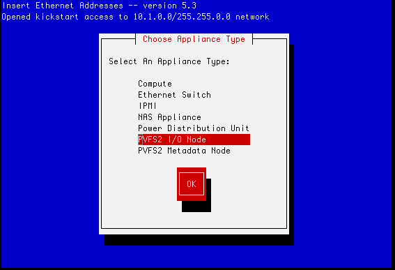

PVFS2 Roll: Users Guide: 
| ||
|---|---|---|
| Prev | Chapter 3. Configuring your PVFS2 Installation | Next |
After you install PVFS2 on your frontend, you need to specify at least one PVFS2 I/O Node. A PVFS2 I/O Node holds data blocks for PVFS2.
To make one of the nodes in your cluster a PVFS2 I/O Node, you'll need to run insert-ethers and select PVFS2 I/O Node.

Then PXE boot the node you wish to be a PVFS2 I/O Node (you can also boot the node with the Rocks Boot CD).
You can also specify a hybrid node that will be configured as a PVFS2 I/O Node and a Compute Node. Nodes that are in this configuration will serve PVFS2 blocks as well as have user jobs scheduled on them (e.g., SGE or PBS will schedule jobs on this node).
 | Installing hybrid nodes is highly discouraged. This is because user jobs will be scheduled on hybrid nodes and user jobs have been known to crash nodes. When a PVFS2 I/O Node crashes, the entire PVFS2 file system will be offline. |
To make one of the nodes in your cluster a hybrid node, you must first install a compute node in the standard way, then, assuming the compute node you want to convert into a hybrid node is named compute-0-0, execute:
# rocks set host attr compute-0-0 pvfs_io true |
Then, reinstall the compute node.